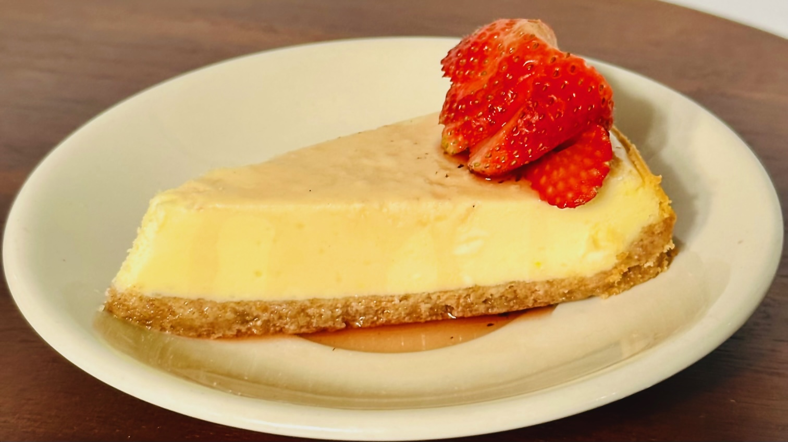

Cheesecake

Ingredients for the crust
- 1.5 cups almond flour
- 1/4 cup powdered sweetner
- 1 tsp. cinnamon
- 6 tbsp. Butter (melted)
Ingredients for the filling
- 6 8oz cream cheese
- 2 cups powdered sweetner
- 5 eggs
- 8 oz. sour cream
- 1 tbsp. vanilla extract
Ingredients for the sauce
- 2 tbsp monk fruit sweetner
- 1 cup strawberries
- 1/4 cup water
- 1 tbsp lemon
Nutrition Information
| Amount per serving |
1 slice |
| Calories |
325 |
| Total Fat |
31g |
| Total Carbohydrates |
5g |
| Fiber |
1g |
| Sugar |
2g |
| Protein |
7g |
Instructions
- Pre-heat oven to 325°F.
- Crust: Combine dry ingredients in a bowl.
- Mix in the butter.
- But crust mixture into a 10 x 4 inch pan and spread evenly.
- Refrigerate for about 20mins.
- Beat the cream cheese into fluffy.
- Add in sweetner little by little.
- Add eggs, vanilla, and the sour cream and mix until well blended.
- Pour cheesecake filling into the crust.
- Bake for about 50mins and let rest for about 30mins with oven off.
- Rest for another hour and refrigerate for 8 hours.